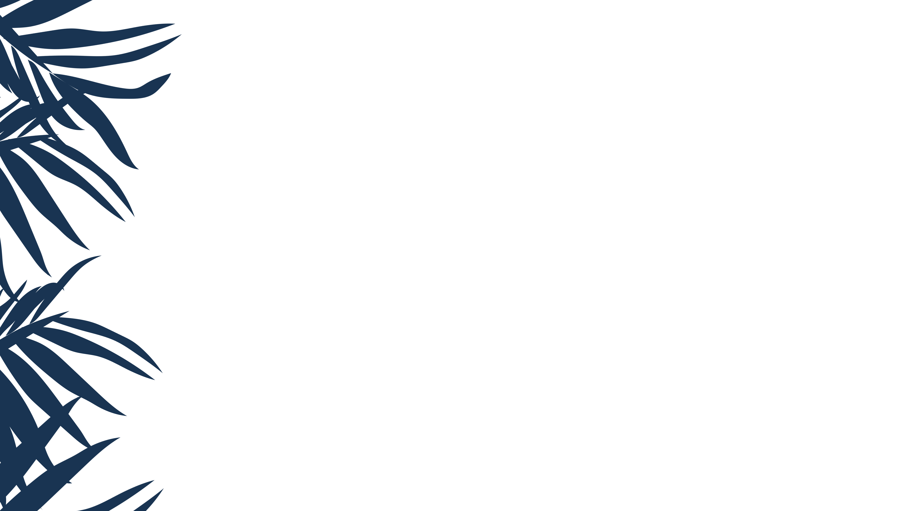
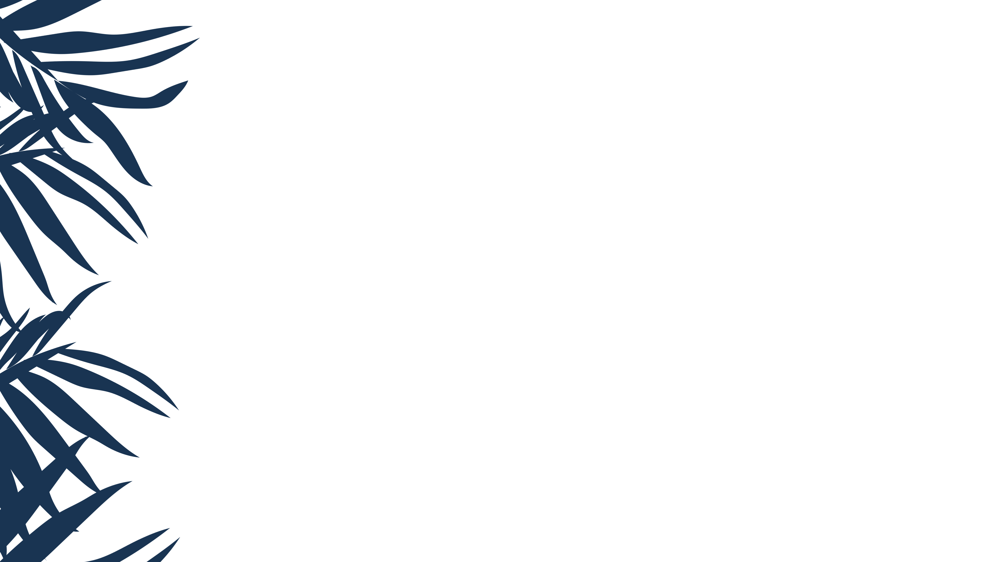
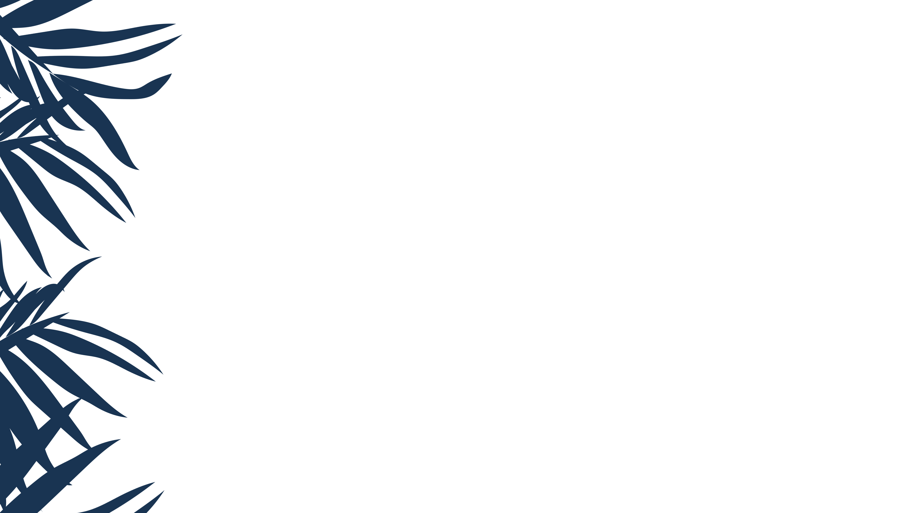
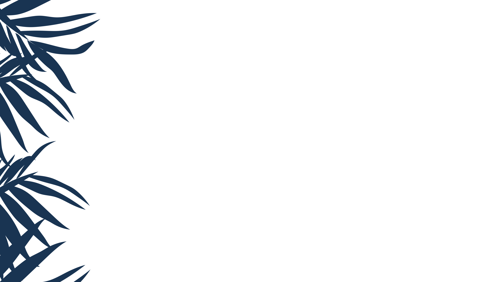

Podemos mudar!
 



Era uma vez, em uma tarde tranquila, um grupo de amigos se reuniu para um café. Entre goles e risadas, surgiu uma ideia simples, mas potencialmente revolucionária. Eles sonhavam em criar uma plataforma que pudesse dar voz a todos, uma plataforma onde qualquer pessoa pudesse iniciar uma mudança, grande ou pequena, a partir do conforto de sua casa. Assim nasceu o nosso site de petições online.
Hoje, temos o prazer de dizer que essa ideia simples se transformou em uma força poderosa para a mudança social. Nossa plataforma permite que você faça a diferença no mundo sem sair de casa. Com apenas alguns cliques, você pode iniciar uma petição, compartilhá-la com amigos e familiares e começar a coletar assinaturas.
Nunca foi tão fácil fazer a diferença. No passado, iniciar uma petição exigia tempo, recursos e muita paciência. Hoje, com a nossa plataforma, você pode iniciar uma petição em minutos, diretamente do seu sofá. Você pode fazer a diferença enquanto toma uma xícara de café, durante o intervalo do trabalho ou mesmo antes de dormir. A mudança está literalmente ao alcance dos seus dedos.
Nós nos esforçamos para tornar o processo de criação de petições o mais simples possível. Tudo o que você precisa fazer é preencher um formulário simples, descrever a causa pela qual está lutando e clicar em “Enviar”. Nossa plataforma cuidará do resto. Você pode acompanhar o progresso da sua petição, ver quantas pessoas a assinaram e até mesmo receber notificações quando atingir marcos importantes.
Acreditamos que cada voz importa e que juntos podemos fazer a diferença. Convidamos você a se juntar a nós nesta jornada. Comece sua própria petição hoje e veja como é fácil fazer a diferença. Lembre-se, uma ideia simples pode ser revolucionária. A sua próxima ideia pode ser a próxima grande mudança no mundo. Estamos ansiosos para vê-la se tornar realidade. Bem-vindo ao mundo das petições online.
Diversidade
Meio ambiente
Reclamações